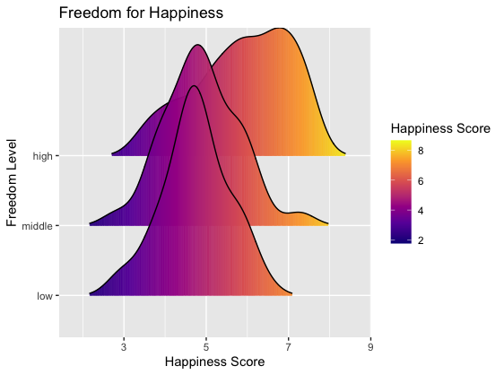
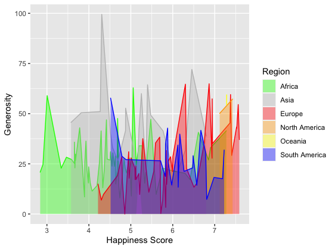

Data visualization and analysis on world happiness 🌎
This data set is called World Happiness Report. The
World Happiness Report is a survey of global happiness. I chose the
report from 2015, which ranked 158 countries according to their level of
happiness. The report looks back at the state of happiness in the world
today and shows how to explain the differences in happiness between
individuals and nations.
The happiness score and rankings use data from the Gallup World Poll. The scores are based on answers to the survey’s main life assessment questions in the poll. There are also other factors behind the happiness index, like GDP per capita, life expectancy, freedom, Trust of Government Corruption, or generosity.
I changed Region into 6 different continents: Africa,
Asia, Europe, North America, Oceania, and South America.
And I turned Freedom into a factor with three
categories: low, medium, high based on which third of the distribution
it belongs to.
1. Side-by-side boxplot comparing Happiness score by different regions
From these two graphs we can see that Europe has the highest Happiness Score 7.59 and Africa has the lowest Happiness Score 2.84. But on average, people living in Oceania and North America are happier than people in other regions.
One interesting point is that although Europe has the highest Happiness Score, it has a big range between its highest and lowest score (7.59 & 4.22). So this means that when we talk about people from Europe, we cannot say that they are happy since they are from Europe. I think this might because Europe is very big and has a lot of countries, and there is a big gap between rich and poor.
Africa also has the similar situation, since there are some outliers in Africa, which are even approximately equal to the highest happiness score in South America.
3. Scatterplot comparing GDP and Happiness
GDP per Capita and Happiness Score have a weak positive relationship, which means that with the GDP getting higher, people are living happier. Africa countries (rea dots) have relatively lower GDP, but there some outliers in Africa, which have both high GDP and Happiness Score. Oceania and North America countries have relatively higher GDP than other regions, so they also have higher Happiness Score than other regions.
This might because the higher the GDP is, the better the quality and standard of people’s life will be, so people are more likely to feel happy in life.
4. ggridges Heatmap comparing Freedom and Happiness

The density plots for low freedom level and high freedom level are approximately normal distributed. But the density plot for high freedom level is left-skewed, which means that for regions with high freedom level, there are more people with higher happiness score than others. Therefore, Freedom makes Happiness.
5. ggmuller comparing Generosity and Happiness by different regions

I used ggmuller to compare the relationship between Happiness Score and Generosity by different regions.
But actually, I didn’t find a significant relationship between Happiness Score and Generosity. We can see that on average Africa and South America do not have a big difference in their generosity score, but their happiness score have big difference: South America has much higher happiness score than Africa.
We can also see in the graph that there is a highest peak in grey, which means that Asia has the highest generosity score. However, the happiness scores of Asia are not significantly high or low.
6. Scatterplot comparing Life Expectancy and Happiness
From all the six scatterplots of different regions, we can find that Life Expectancy score and Happiness Score has a positive relationship. Although North America and Oceania do not have many countries to let us see a positive relationship, the dots are all on the top right corner of the scatterplot, which means that they have both high life expectancy and happiness score. Therefore, with the Life Expectancy getting higher, or the number of years a person can expect to live is larger, people are living happier.
According to my data visualization and analysis above, I found that GDP per Capita, Freedom level, and life expectancy have some effects on Happiness. All these three factors have a positive relationship with Happiness Score, which means that people will be happier if they have higher GDP, higher freedom level, and higher life expectancy.
But there is no significant relationship between Happiness Score and Generosity, which means whether people are generous or not will not affect people’s happiness.
However, I also think that although these factors can affect people’s happiness, they are not the decisive factors. In addition to these factors, we should compare them with other comprehensive indicators such as culture and education level, entertainment field and environmental protection. 🌷
https://www.kaggle.com/datasets/unsdsn/world-happiness